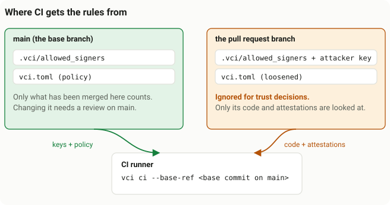

GitHub Actions
Add one step to your workflow. It skips every test that a trusted person or agent already ran against the same code, and runs the rest.
The one line
Put this after your checkout and toolchain setup steps:
- uses: PandelisZ/cryptographically-verifiable-ci-runner@v1A few terms used on this page:
- Unit: the smallest thing vci can skip. A test file for Vitest, pytest, Minitest and RSpec; a package for Go; a test target for Rust.
- Attestation: a record, signed with an SSH key, that says "this unit passed against exactly these inputs".
- Base branch: the branch a pull request merges into, usually
main. CI reads the trusted keys and the policy from its commit, never from the pull request.
@v1 follows the latest tested 1.x release. See pinning for stricter options.
Before you start
vci.tomland.vci/allowed_signersare merged to your default branch (setup guide)..git-meta(written byvci init) is committed.- Attestations are pushed with
vci pushbefore, or together with, the branch. With asigning-key, CI also attests and pushes what it runs (see attesting in CI).
A complete workflow
Save this as .github/workflows/test.yml. It is for Vitest; for other runners, swap the toolchain steps for the ones below.
name: test
on:
pull_request:
push:
branches: [main]
permissions:
contents: read # read-only is enough
jobs:
test:
runs-on: ubuntu-latest
steps:
- uses: actions/checkout@v4
with:
fetch-depth: 0 # the base commit must be available
# Your toolchain, at the same version as locally
- uses: actions/setup-node@v4
with:
node-version: 22
cache: npm
- run: npm ci
- uses: PandelisZ/cryptographically-verifiable-ci-runner@v1Run on the hosted runner directly, not in a container: job. Attestations made as a normal user are not accepted by a verifier running as root.
Setup steps for each runner
Each tab replaces the toolchain steps of the workflow above. Pin the same versions you use locally: an attestation only counts where the toolchain matches.
Environment variables. The job exports nothing for vci. A variable that must have the same value on the laptop and the runner (TZ, LANG, CGO_ENABLED) goes in vci.toml's [env] set, and vci sets it in every test process, here and where attestations are made. Every other variable of the runner (GITHUB_*, RUNNER_*, CI, ...) is removed from the tests unless [env] lists it. vci env --base-ref origin/main prints the policy the runner applies (see [env]).
- uses: actions/setup-node@v4
with:
node-version: 22 # same Node major version as locally
cache: npm
- run: npm ciAdd at the top level of the workflow:
env:
UV_PYTHON_PREFERENCE: only-managedSteps:
- uses: astral-sh/setup-uv@v6
with:
version: "0.11.7" # same uv version as locally
- run: uv sync --lockedTZ and CGO_ENABLED belong in vci.toml ([env] set = { TZ = "UTC", CGO_ENABLED = "0" }): vci sets them on the runner and locally, so the job exports nothing.
Steps:
- uses: actions/setup-go@v5
with:
go-version: "1.26.2" # exact version used locally
- run: go mod download - uses: dtolnay/rust-toolchain@master
with:
toolchain: "1.95.0" # same release as rust-toolchain.toml
- run: cargo fetch --lockedTZ comes from vci.toml ([env] set = { TZ = "UTC" }, as vci init writes it): vci sets it on the runner and locally.
Steps:
- uses: ruby/setup-ruby@v1
with:
ruby-version: "3.4.9" # exactly the Ruby used locally
bundler-cache: trueGemfile.lock must list the runner's platform (bundle lock --add-platform x86_64-linux). More in Rails: laptop to Linux runner.
The same as Rails (TZ comes from vci.toml's [env] set).
Steps:
- uses: ruby/setup-ruby@v1
with:
ruby-version: "3.4.9" # exactly the Ruby used locally
bundler-cache: trueRSpec options belong in the repository's .rspec. See RSpec.
For several languages in one job, set up every toolchain and call the action once. Example.
What the action does
- Installs
vciin about a second: the release binary recorded in the pinned action'srelease/manifest.txt, its checksum verified against that file. The action never compilesvciin your CI. When no published binary fits (the action is pinned to a commit that is not a release, or the download fails) it fails at once with an error that says what to do (see prebuilt binaries). - Runs
vci fetch --remote origin. This fetchesrefs/meta/main, the git ref where attestations live. Acontents: readtoken is enough. If the fetch fails, it warns and every test runs. - Runs
vci planand writes the plan to the job summary. - Runs
vci ci: it runs every unit that was not skipped and writes an audit log. The job fails if any test fails. - With
signing-key: it attests every unit that ran and passed, and pushes the attestations torefs/meta/main, so the next commit skips each unit whose inputs did not change. See attesting in CI.
Inputs and outputs
Every input is optional.
| Input | Default | Meaning |
|---|---|---|
base-ref | PR base commit, or the pushed commit | Commit that policy and trusted signers are read from |
command | ci | ci plans and runs the rest; plan only decides |
remote | origin | Git remote name or URL whose refs/meta/main holds the attestations |
audit-log | vci-audit.json | JSON record of what was skipped, by whom, and what ran |
working-directory | . | Directory to run vci from |
build-from-source | false | true lets the action compile vci (about two minutes cold, needs a Rust toolchain) when no published binary fits; with false it never compiles and fails instead. For working on vci itself; see prebuilt binaries |
prebuilt | true | Deprecated alias: false means build-from-source: true, except that it compiles without trying the release binary first |
token | github.token | Token gh uses to download the release binary; without gh, the public release URL is used |
signing-key | "" | Contents of an SSH private key, from an environment secret limited to the default branch. vci ci then attests what it runs. Its public half must be in .vci/allowed_signers on the base branch, under a principal listed in policy.no_skip_refs_except for main to skip on it. See attesting in CI |
oidc | false | true (or github, public-good): attest like signing-key, keylessly, with the job's OIDC token and no secret. Needs permissions: id-token: write. See keyless attestation |
ttl | 14d | Lifetime of those attestations (at most policy.max_ttl) |
push | true | With signing-key or oidc: push the attestations to remote. Needs permissions: contents: write; a failed push is a warning |
| Output | Meaning |
|---|---|
skipped | Number of test units skipped |
run | Number of test units that ran |
attested | Number of test units attested with signing-key or oidc |
Attesting in CI
Without a key, CI only consumes attestations, and every push to main runs the whole suite. With one, CI leaves attestations of its own behind: a push to main runs what is not attested (the first time, everything) and attests every unit that passed, so the next commit, on main or on a pull request, skips each unit whose inputs did not change.
- Commit A on main: nothing is attested yet, so every unit runs. CI attests them and pushes the attestations to
refs/meta/main. - Commit B changes
src/b.ts: onlysrc/b.test.tsreads it, so only that file runs (and is attested). Everything else skips on A's attestations, which are keyed by inputs, not by commit. - Commit C changes only the README: every unit skips.
vci ciprintsnothing to runand the job never starts the test runner.
Units that fail, or that vci run would refuse to attest, still run on every commit. Each attestation expires after ttl, and its unit then runs, and is attested, again.
-
Make a key for CI
Outside
~/.ssh: it is not yours. Trust it under its own principal:ssh-keygen -t ed25519 -N "" -C vci-github-actions -f vci-github-actions echo "github-actions namespaces=\"vci-attest\" $(cut -d' ' -f1,2 vci-github-actions.pub)" >> .vci/allowed_signers -
Let that principal skip on main
Keep
no_skip_refsand name the principal inno_skip_refs_except. Main then skips what CI attested and still runs everything any other signer claims.[policy] no_skip_refs = ["refs/heads/main", "refs/tags/**"] no_skip_refs_except = ["github-actions"] -
Store the key in an environment
Create a GitHub Environment whose deployment branches are limited to the default branch, and store the private key as its secret
VCI_SIGNING_KEY. In Settings → Environments, or:gh api -X PUT 'repos/{owner}/{repo}/environments/vci-attest' \ -F 'deployment_branch_policy[protected_branches]=false' \ -F 'deployment_branch_policy[custom_branch_policies]=true' gh api -X POST 'repos/{owner}/{repo}/environments/vci-attest/deployment-branch-policies' -f name=main gh secret set VCI_SIGNING_KEY --env vci-attest < vci-github-actions rm vci-github-actions # the secret is now the only copy; keep the .pubNot a repository secret (
gh secret setwithout--env): every pull request run from a branch of the repository can read those. -
Merge steps 1 and 2 to the default branch
Trust and policy come from the base commit. A push to main reads them from the pushed commit itself, so the push that adds them already runs, attests and publishes everything.
-
Pass the key only on pushes to main
From a job that names the environment and may write (
contents: write:vci ci --pushpublishesrefs/meta/mainwith the checkout's credentials). Pull requests run a job without the key and only consume attestations.
A complete workflow (Vitest; for other runners, swap the toolchain steps for the ones above):
name: test
on:
pull_request:
push:
branches: [main]
permissions:
contents: read
jobs:
# Pull requests: skip what is attested, run the rest. No key, read-only.
test:
runs-on: ubuntu-latest
if: github.event_name == 'pull_request'
steps:
- uses: actions/checkout@v4
with:
fetch-depth: 0 # the base commit must be available
- uses: actions/setup-node@v4
with:
node-version: 22
cache: npm
- run: npm ci
- uses: PandelisZ/cryptographically-verifiable-ci-runner@v1
# Pushes to main: run what is not attested, attest it, publish it.
test-main:
runs-on: ubuntu-latest
if: github.event_name == 'push' && github.ref == 'refs/heads/main'
environment: vci-attest # the only place VCI_SIGNING_KEY exists
permissions:
contents: write # git-meta pushes refs/meta/main with the checkout's credentials
steps:
- uses: actions/checkout@v4
with:
fetch-depth: 0
- uses: actions/setup-node@v4
with:
node-version: 22
cache: npm
- run: npm ci
- uses: PandelisZ/cryptographically-verifiable-ci-runner@v1
with:
signing-key: ${{ secrets.VCI_SIGNING_KEY }}
# ttl: 14d # lifetime of CI's attestations (at most policy.max_ttl)
# push: true # publish them on refs/meta/main (a failed push is a warning)With signing-key, the action writes the key to $RUNNER_TEMP/vci-key (mode 600, never printed), runs vci ci --key ... --ttl 14d --push --remote origin, removes the key file and sets the output attested. Only test failures fail the job; a failed push is a warning.
Why an environment
A pull_request run uses the branch's own copy of the workflow, so no if: in the workflow can keep a repository secret from anyone who can push a branch. The environment's branch rule is enforced by GitHub, outside the workflow. Without it, a branch's run could sign as github-actions, and after a merge main would skip units whose code only that branch ran.
As a second line, vci ci --key attests nothing (a warning; the tests still run and nothing is pushed) when the key's principal is in no_skip_refs_except and the current ref does not match no_skip_refs. That catches a misconfigured workflow, not a branch that changes it. To attest pull request runs too, give them a different key whose principal is not in no_skip_refs_except: main never skips on its word.
What the key is shared with
Every process of the job runs as the same user, so the tests, every test dependency and every other step of that job can read the key file while it exists. Whoever copies it can make main skip any unit until its line is removed. Treat it as a credential your locked dependencies share:
- keep it in the restricted environment, one key per repository, never an organization secret;
- keep
ttlshort; - rotate by replacing its line in
.vci/allowed_signerson the default branch, then the secret, and do so whenever a dependency of the attested job is found compromised. Its attestations stop counting the moment the line is gone; - list no developer or agent principal in
no_skip_refs_except.
Keyless attestation (OIDC)
A job can attest without any key. With oidc: true (vci ci --oidc) it proves who it is with the OIDC token GitHub gives a job that has permissions: id-token: write, and signs through Sigstore, the way npm publish --provenance and actions/attest do: an ephemeral key, certified for ten minutes by Fulcio from the token, and an RFC 3161 timestamp per attestation. There is no secret to store, rotate or leak. Trust becomes a policy on the job's identity, committed next to .vci/allowed_signers; laptops keep SSH keys, and both kinds of attestation share the store and the policy.
-
Trust the workflow, not a key
vci init --oidcwrites both files for origin's repository, or by hand:# .vci/identities.toml [[identity]] principal = "github-actions" # the name policy lists use issuer = "https://token.actions.githubusercontent.com" repository = "owner/name" workflow = ".github/workflows/test.yml" # glob ref = "refs/heads/main" # glob event = "push" # optional, as are environment and runner_environment environment = "vci-attest"gh attestation trusted-root > .vci/sigstore-trusted-root.jsonThe trust root lists the certificate and timestamp authorities of GitHub's Sigstore instance and of the public-good one. GitHub renews its intermediates yearly: refresh the file with the same command when
vci explainnames an unknown issuer. -
Let that principal skip on main
Name it in
no_skip_refs_exceptas for a key, and merge both files to the default branch. -
Attest from the main-branch job
test-main: runs-on: ubuntu-latest if: github.event_name == 'push' && github.ref == 'refs/heads/main' environment: vci-attest # optional: lets the identity require it permissions: contents: write # vci ci --push id-token: write # the OIDC token Fulcio certifies steps: - uses: actions/checkout@v4 with: fetch-depth: 0 - run: npm ci - uses: PandelisZ/cryptographically-verifiable-ci-runner@v1 with: oidc: true
A stolen certificate is worthless ten minutes later and its key never leaves the job's memory. What stays the same: any step of the attesting job can ask for a token while the job runs, so the identity main skips on must only match runs on main (pin ref, event and, best, an environment restricted to the default branch). vci ci --oidc refuses to attest, like --key, when the job's identity signs as a principal of no_skip_refs_except on a ref no_skip_refs does not match. Verification is offline: the certificate must chain to the committed trust root, a trusted timestamp must place the signature inside the certificate's ten minutes, and the certificate's identity must match an [[identity]]. Anything else makes the unit run, and vci explain names the check. Details: docs/GITHUB_ACTIONS.md.
Pinning
The action is the verifier, so choose how far it may move:
| Reference | Moves? | Use when |
|---|---|---|
@v1 | only to tested 1.x releases | the default |
@v1.x.y (after 1.4.0) | never | you want a specific release |
@<full commit SHA> | never | strictest pinning; it must be the commit of a release (the one v1 points to, see below) |
A SHA pin must be the commit that records its release in release/manifest.txt (its message is "Record release vX.Y.Z for the action"). That is the commit v1 points to after each release, and from the first release after 1.4.0 on, the one its version tag and release page name. Any other commit of the repository has no published binary, so the action refuses it with an error instead of compiling. To find the SHA v1 points to:
git ls-remote https://github.com/PandelisZ/cryptographically-verifiable-ci-runner refs/tags/v1
# or
gh api repos/PandelisZ/cryptographically-verifiable-ci-runner/git/ref/tags/v1 --jq .object.shaNever reference a branch: the newest commits of main are usually not released, and the action fails on them. The version tags v1.0.0 to v1.4.0 (and their release-page SHAs) point at the commit before their release was recorded in release/manifest.txt, so they run the action as it was then, which compiles vci (about two minutes) instead of downloading it. Use @v1, or the SHA it points to, instead.
Prebuilt binaries
The action downloads a release binary, which takes about a second, and never compiles vci in your CI. It installs the binary only when the pinned action's release/manifest.txt names a release built from exactly the action's own sources, a binary exists for the runner (Linux or macOS, x86_64 or arm64), and its SHA-256 equals the checksum in that manifest; because the checksums are part of the pinned action, replacing a release asset cannot change what runs. The log shows which one it installed:
using vci v1.4.0 (vci-x86_64-unknown-linux-musl.tar.gz, sha256 c906f58b...)Otherwise the job fails at its first step, before any other work, with an error saying why. Pinned to a branch or to a commit that is not a release, it shows:
vci: this commit of the action (<ref>, sources <fingerprint>) has no published binary (release/manifest.txt records
v1.4.0 built from <fingerprint>). Use a release: uses: PandelisZ/cryptographically-verifiable-ci-runner@v1, or the
full commit SHA v1 points to (git ls-remote https://github.com/PandelisZ/cryptographically-verifiable-ci-runner
refs/tags/v1). To compile vci in this job anyway, set build-from-source: true.Change the uses: line to @v1 or that SHA (see pinning). The other errors are in troubleshooting.
It downloads with gh release download (preinstalled on GitHub-hosted runners) and otherwise, or when gh fails, from the public release URL with curl or wget, so container jobs and self-hosted runners without gh need one of those two.
build-from-source: true is for working on vci itself, as this repository's own CI does to test sources that are not released yet. When no published binary fits, the action then compiles vci (cargo build --release, about two minutes on ubuntu-latest without a cache) instead of failing, and a failed download or checksum mismatch is a warning. It needs a Rust toolchain before the action (for example dtolnay/rust-toolchain). It caches the binary per source fingerprint, and cargo's registry and build directory per Cargo.lock and rustc version, so a commit that changes only vci's own crates does not compile the dependencies again.
Security rules
CI takes its rules from the base branch and only looks at code and attestations from the pull request:

- Pin the action. It is the verifier (see pinning).
- Never build
vcifrom the pull request's own checkout. The pull request could change the verifier that checks it. - Leave
base-refat its default, unless you know the ref is outside the pull request's control. - Keep
refs/heads/maininpolicy.no_skip_refs. Pushes to the default branch then run everything.policy.no_skip_refs_exceptlets only CI's own key skip there (see attesting in CI); list no developer or agent principal in it. - Use
pull_request, notpull_request_target. Fork pull requests cannot push attestations, so every test runs for them. - Revoke a signer by removing their line from
.vci/allowed_signerson the default branch. - Without the action, always pass
--remotetovci fetch, so the checkout never chooses where attestations come from.
Who can push attestations
vci push writes refs/meta/main. Anyone with push access to the repository can write, overwrite or delete metadata there.
That is safe by design. An attestation only counts when its signature verifies against a key in the base commit's .vci/allowed_signers, and it matches the unit, repository, toolchain and inputs exactly. A deleted or overwritten attestation only makes its unit run.
Anyone who can push metadata can also turn on git-meta's auto-prune or filter rules for everyone. Pruned attestations only make their units run, and vci fetch warns about such settings in the action's log.
To limit who may write, add a repository ruleset on refs/meta/**. When CI attests its own runs, let the main-branch job's token through it.
Without the action
# The release binary that v1 records in release/manifest.txt, checked
# against that checksum: about a second, nothing is compiled. For a
# strict pin, check out the commit SHA v1 points to instead of v1.
- name: Install vci
run: |
git clone --quiet \
https://github.com/PandelisZ/cryptographically-verifiable-ci-runner \
"$RUNNER_TEMP/vci"
cd "$RUNNER_TEMP/vci"
git checkout --quiet --detach v1
asset=vci-x86_64-unknown-linux-musl.tar.gz # Linux x86_64; release/manifest.txt lists the others
tag=$(sed -n 's/^tag=//p' release/manifest.txt)
curl -fsSL --retry 3 -o "$asset" \
"https://github.com/PandelisZ/cryptographically-verifiable-ci-runner/releases/download/$tag/$asset"
grep " $asset\$" release/manifest.txt > "$asset.sha256" # fails if not recorded
sha256sum -c "$asset.sha256"
mkdir bin && tar -C bin -xzf "$asset" vci
echo "$RUNNER_TEMP/vci/bin" >> "$GITHUB_PATH"
echo "VCI_PY_PLUGIN=$RUNNER_TEMP/vci/py/pytest-plugin" >> "$GITHUB_ENV"
echo "VCI_JS_PLUGIN=$RUNNER_TEMP/vci/js/vitest-plugin" >> "$GITHUB_ENV"
echo "VCI_RUBY_COLLECTOR=$RUNNER_TEMP/vci/ruby/vci-collector" >> "$GITHUB_ENV"
- run: vci fetch --remote origin
- run: |
vci ci \
--base-ref "${{ github.event.pull_request.base.sha || github.sha }}" \
--audit-log vci-audit.jsonTroubleshooting
Run vci explain <file> --base-ref origin/main locally for the full reason a unit ran.
| Symptom | Likely cause |
|---|---|
| Everything runs on a pull request | vci.toml or .vci/allowed_signers is not on the base branch yet, or attestations were not pushed (git ls-remote origin refs/meta/main is empty) |
failed check: toolchain | Python, Node, uv, Ruby, Bundler or package versions differ between the laptop and the runner |
failed check: inputs | A file the test depends on changed after it was attested; vci explain names it |
failed check: env | A hashed variable has another value (or is unset) on the runner; vci explain names it and its class (env:DATABASE_URL (hash)). Give it the same value on both sides, or move it to [env] set |
failed check: env-config | The base commit's [env] lists (or vci's built-in lists) differ from the attestation's; every attestation made before vci 1.6.0 fails this once. vci env --base-ref origin/main shows the difference |
failed check: signer | The signing key is not in the base commit's allowed_signers, or it has expired |
failed check: signer on main: ... is not in no_skip_refs_except | Expected: on a ref in no_skip_refs only the principals in no_skip_refs_except (CI's key) can skip |
| Every push to main still runs everything | no_skip_refs_except is empty or not on main yet, CI's key is not in main's allowed_signers, or the previous push's attestations were not published (pushed in the audit log; the job needs contents: write) |
not attesting: the key signs as github-actions ... | CI's key reached a run on a ref outside no_skip_refs, such as a pull request: pass it only from the main-branch job with the environment |
| A Go package or cargo target never skips on the runner | Its code depends on the platform (build tags, _linux.go files, cfg(target_os), runtime.GOOS, floating-point maths); such units are only accepted on the same OS and architecture |
A test reads HOME or USER, or a variable in [env] hash such as CI | Those values differ on a runner, so that file always runs there. CI is removed from the tests unless listed; set = { CI = "true" } gives both sides the same value |
| No Rails test file ever skips on the runner | See Rails: laptop to Linux runner |
| An RSpec file is never attested | An example was pending, skipped, filtered out or retried, or the process exited non-zero after the report; vci run prints the reason (rspec:filtered:..., rspec:retry, ...) |
Minitest files never run with runner = "rspec" | An explicit runner leaves the other runner's files to you; vci plan and vci ci warn, and the audit log lists it under warnings |
vci: this commit of the action (...) has no published binary | The action is pinned to a branch or to a commit that is not a release. Use @v1 or the SHA v1 points to (see pinning); only vci's own development needs build-from-source: true |
The action takes about two minutes and its log shows Build vci from source | It is pinned to v1.0.0 to v1.4.0 or their SHAs, which predate releases recorded on their own commit (see pinning): use @v1 |
vci: release ... has no binary for Windows-X64 (or another platform) | Releases are built for Linux and macOS, x86_64 and arm64 only: run the job on one of those |
vci: could not download vci-....tar.gz of release ... | A network failure (re-run the job), or the runner cannot reach github.com (a self-hosted runner behind a proxy). The message lists what was tried: gh with the token input, then curl or wget on the public release URL |
vci: cannot download ...: this job has none of gh, curl or wget | A container image without them: install curl in the image |
vci: ... does not match the checksum in release/manifest.txt | The downloaded file is not the one the pinned action records, so nothing was installed. Re-run; if it persists, report it |
build-from-source needs a Rust toolchain (cargo) on the PATH | build-from-source: true without a toolchain step before the action. Remove the input (you should not need it), or add dtolnay/rust-toolchain |